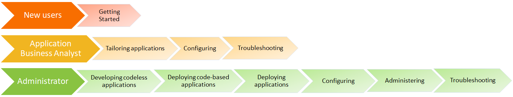

Orientation
Quick overview
BMC Helix Innovation Studio helps you to build your own applications with the help of different designer consoles, deploy them for the end users of these applications, and manage or configure them. BMC Helix Innovation Studio helps you establish data requirements, expose fields for your user interface, and implement complex powerful business processes.
BMC Helix Innovation Studio is based on a Model View Controller pattern, which helps you to separate database tables, business logic, and user interface. You can upload the applications and libraries developed in BMC Helix Innovation Studio in a central repository, called Marketplace, from where other developers can download them for reuse.
BMC Helix Innovation Studio provides the following features to create applications and libraries:
Solutions for your business needs
Solves problem without substantial code changes
Applies new technology to products to enhance your products
Integrates with other applications
Creates shareable code extensions
Product roles
Individuals who need to access BMC Helix Innovation Suite are registered as users by an administrator. The administrator then assigns the users to access control groups. The control group members can assign users to groups and then associate the groups with roles.
The following table provides details about the roles:
|
Action |
Reference |
|
Learn about AR System roles |
|
|
Learn about BMC Helix ITSM roles |
Roles and permissions |
|
Learn about BMC BMC Helix ITSM Insights roles |
Roles and permissions |
|
Learn about BMC Helix Innovation Studio roles |
Roles and permissions |
|
Learn about BMC Live Chat roles |
Roles and permissions |
|
Learn about BMC Helix Multi-Cloud Broker roles |
Assigning roles and permissions |
Product components
BMC Helix Innovation Suite includes the following components that help you achieve specific goals:
|
Component name |
Description |
|
The AR System server is the primary feature that manages user interaction with the underlying database. Install the AR System server on UNIX, Linux, or Microsoft Windows system. |
|
|
Mid Tier is middleware that enables you to access AR System access through a browser. InstallMid Tier on a UNIX, Linux, or Windows system. |
|
|
The Approval Server is a self-contained, shared module that can be attached to any AR System application. Approval Server brings a flexible approach to automating approval processes for any organization. |
|
|
The Assignment Engine , installed with AR System enables you to use processes instead of workflow to automatically assign requests to individuals. |
|
|
The Email Engine allows you to access AR System through an email client and to receive email notifications. The Email Engine transforms email messages into an interface to the AR System server . The Email Engine enables users to instruct the AR System server to perform queries, submissions, or modifications to entries, all by using email. |
|
|
Developer Studio is an integrated development environment (IDE) for AR System applications. It provides all application development functions needed to design an application. |
|
|
BMC Helix Innovation Studio is a graphical user interface used to develop and tailor applications or libraries. You can use the designer tabs in BMC Helix Innovation Studio to create views, records, and business logic for an application or a library. |
Product key features
The following table lists key features that you can use when developing or customizing an application:
|
Key features |
Description |
|
|
The Foundation module is installed along with BMC Helix ITSM applications. BMC Helix ITSM applications use the Foundation module to manage common data structures used by all applications. |
||
|
Common reporting mechanism for Remedy and BMC Helix Innovation Studio applications |
BMC Helix Dashboards is a SaaS service on the BMC Helix Portal that provides the ability to create interactive dashboards for the applications in your environment. BMC Helix Dashboards uses the Service Management plug-in to create and view reports for service management applications. |
|
|
Capabilities of Developer Studio |
||
|
In Developer Studio, you can enable progressive views for an out-of-the-box form or for a custom form. Using PWA, you can create applications that are flexible and provide a dynamic, modern user experience. |
||
|
Use the Full Text Search (FTS) o ption to index character, diary, and attachment fields for searching. The FTSoption matches entries from fields against the search criteria that you specify. |
||
|
As a developer, you can call third-party REST APIs to update the BMC Helix ITSM application by creating a filter inDeveloper Studio . |
||
|
You can use AR System REST API to register a webhook definition. Use the webhook to send real-time event notifications to external systems from the AR System server . The webhook definition eliminates the manual effort required to create workflows and removes the need for continuous server polling. |
||
|
The Deployment Application provides a single method for promoting definitions and data effectively and reliably across environments. |
||
|
Capabilities of BMC Helix Innovation Studio |
||
|
You can develop codeless and code-based applications by using BMC Helix Innovation Studio:
|
||
|
Use BMC Helix Innovation Studio to create definitions (data, user interface, and business logic) required for applications by using the various available designers. Customize the application by modifying definitions of the application by using BMC Helix Innovation Studio. |
||
|
Configure cognitive service use the advantages of Artificial Intelligence (AI) and Machine Learning (ML) in your applications. |
||
|
Configure cognitive search as an alternative to Full Text Search (FTS). |
||
|
Enabling cognitive service summaries for custom applications |
Configure cognitive summarization service that enables the administrator to use the advantages of Natural Language Processing and Machine Learning in your applications to summarize the text. |
|
Product documentation
The BMC Helix Innovation Studio documentation helps new and experienced users implement or use this product. Based on your role, the following sections of the documentation are recommended:

User assistance
A number of channels are available through which the developer community can get support.
You can log on to BMC Developer community
 to get support from other developers by using Developer portal
. Experts from BMC can help you out with your queries.
to get support from other developers by using Developer portal
. Experts from BMC can help you out with your queries.You can look at Developer portal
to collaborate with like-minded developers. You can co-create, innovate, and create applications.Access the tutorial to create a sample application.
If you are a Remedy developer, you can review the Comparison between Developer Studio and BMC Helix Innovation Studio capabilities constructs.
Within BMC Helix Innovation Studio, you can use tool-tips to get in-place assistance for populating fields, you can use the guided tours created for key use cases by using the Self-help widget , or you can take a tutorial that takes you through building an application process.
The following video (2:47) provides an overview of accessing the self-help within BMC Helix Innovation Studio:
Recommended skills set
For an administrator
An administrator can create codeless applications with minimal programming knowledge.
For a developer
For a developer to be able to work smoothly with BMC Helix Innovation Studio and codes, the following skills set is recommended.
Maven
Angular
Server side application development
Prerequisites:
(required) Oracle University Java SE 8 Fundamentals (required)
(recommended) Oracle University Java SE 8 Programming
Read Building RESTful Web Services with JAX-RS tutorial
http://education.oracle.com/pls/web_prod-plq-dad/ou_product_category.getPage?p_cat_id=267
Client side application development
Prerequisites:
(required) Oracle University JavaScript and HTML5: Develop Web Applications
(required) Read online tutorial of JSON
The following video gives you information on developing applications:
Recommended training
Before you start creating applications, BMC recommends the following trainings: